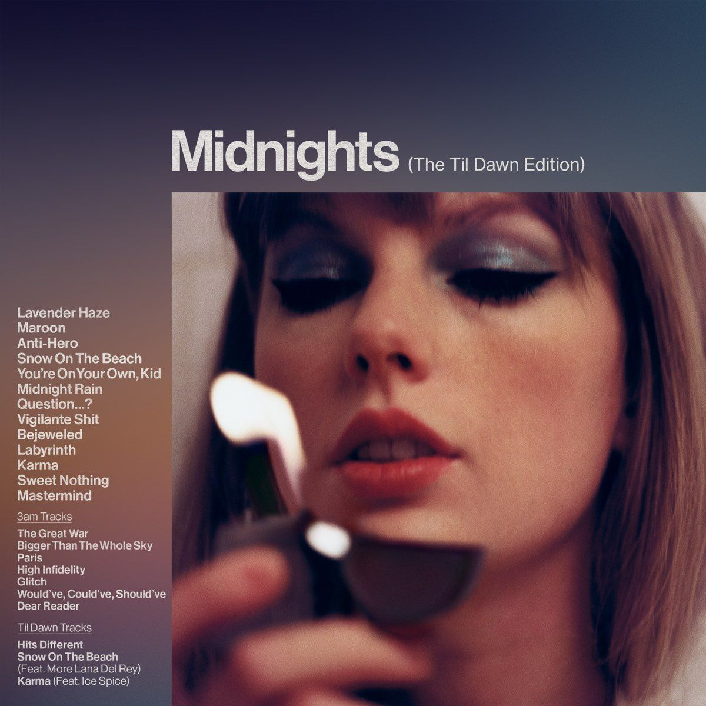

Midnights é o décimo álbum de estúdio da Taylor Swift, lançado em 2022. O álbum apresenta uma sonoridade pop moderna, combinando sintetizadores, melodias envolventes e letras introspectivas. Segundo a própria artista, as músicas representam histórias e pensamentos que surgem durante noites de insônia, abordando sentimentos como amor, insegurança, ambição, autoconhecimento e reflexão. Entre os grandes sucessos do álbum estão "Anti-Hero", "Lavender Haze", "Bejeweled" e "Karma", que ajudaram a tornar Midnights um dos lançamentos mais bem-sucedidos da carreira de Taylor Swift. O projeto recebeu grande reconhecimento do público e da crítica, consolidando ainda mais sua relevância na música contemporânea. Uma das faixas mais marcantes do álbum é "Mastermind", que se destaca por sua narrativa inteligente e sua produção sofisticada. Na música, Taylor revela os bastidores de um relacionamento, admitindo que muitas das coincidências que aproximaram duas pessoas foram, na verdade, cuidadosamente planejadas. A canção aborda temas como vulnerabilidade, desejo de ser amado e a necessidade de ter controle sobre situações importantes da vida. "Mastermind" é a minha música favorita do álbum, pois sua letra criativa e cheia de detalhes torna a experiência de ouvi-la ainda mais especial. A forma como Taylor constrói a história e revela suas intenções ao longo da música demonstra toda a sua habilidade como compositora, fazendo com que a faixa seja uma das mais interessantes e memoráveis de Midnights. No geral, Midnights representa mais uma fase de evolução artística de Taylor Swift, mostrando sua capacidade de transformar emoções e experiências pessoais em músicas que conquistam milhões de ouvintes ao redor do mundo.

Lavender Haze Ouvir músicaLavender Haze Taylor Swift (Me encontre à meia-noite) (Meet me at midnight) (Oh, oh, oh) (Oh, oh, oh) (Oh, oh, oh) (Oh, oh, oh) (Oh, oh, oh) (Oh, oh, oh) (Uou, uou, uou, uou, uou) (Woah, woah, woah, woah, woah) Encarando o teto com você Staring at the ceiling with you Oh, você não é de falar muito Oh, you don't ever say too much E você não tenta interpretar And you don't really read into A minha melancolia My melancholia Eu estive sob escrutínio (sim, oh, sim) I been under scrutiny (yeah, oh, yeah) Você lida com isso maravilhosamente (sim, oh, sim) You handle it beautifully (yeah, oh, yeah) Isso tudo é novo pra mim (sim, oh, sim) All this shit is new to me (yeah, oh, yeah) Eu sinto a névoa do amor me alcançando I feel the lavender haze creeping up on me Surreal Surreal Estaria ferrada se eu ligasse para o que as pessoas dizem de mim I'm damned if I do give a damn what people say Não concordo No deal Essa porcaria estilo anos 50 que eles querem de mim The 1950s shit they want from me Eu só quero ficar nessa névoa do amor I just wanna stay in that lavender haze (Oh, oh, oh) (Oh, oh, oh) (Oh, oh, oh) (Oh, oh, oh) (Uou, uou, uou, uou, uou) (Woah, woah, woah, woah, woah) Tudo o que eles continuam me perguntando (tudo o que eles continuam me perguntando) All they keep asking me (all they keep asking me) É se eu vou ser sua noiva Is if I'm gonna be your bride O único tipo de garota que eles veem (o único tipo de garota que eles veem) The only kind of girl they see (the only kind of girl they see) É o caso de uma noite ou uma esposa Is a one-night or a wife Eu acho perturbador (sim, oh, sim) I find it dizzying (yeah, oh, yeah) Eles estão trazendo a minha história à tona (sim, oh, sim) They're bringing up my history (yeah, oh, yeah) Mas você nem está prestando atenção (sim, oh, sim) But you weren't even listening (yeah, oh, yeah) Eu sinto a névoa do amor me alcançando I feel the lavender haze creeping up on me Surreal Surreal Estaria ferrada se eu ligasse para o que as pessoas dizem de mim I'm damned if I do give a damn what people say Não concordo No deal Essa porcaria estilo anos 50 que eles querem de mim The 1950s shit they want from me Eu só quero ficar nessa névoa do amor I just wanna stay in that lavender haze (Oh, oh, oh) (Oh, oh, oh) A névoa do amor (oh, oh, oh) The lavender haze (oh, oh, oh) (Uou, uou, uou, uou, uou) (Woah, woah, woah, woah, woah) Fale o que tem para falar e viralize (oh, oh, oh) Talk your talk and go viral (oh, oh, oh) Eu só preciso dessa espiral de amor (oh, oh, oh) I just need this love spiral (oh, oh, oh) Tire isso do seu peito (uou, uou, uou, uou, uou) Get it off your chest (woah, woah, woah, woah) Tire isso da minha frente (tire isso da minha frente) Get it off my desk (get it off my desk) Fale o que tem para falar e viralize (oh, oh, oh) Talk your talk and go viral (oh, oh, oh) Eu só preciso dessa espiral de amor (oh, oh, oh) I just need this love spiral (oh, oh, oh) Tire isso do seu peito Get it off your chest Tire isso da minha frente Get it off my desk Eu sinto a névoa do amor me alcançando (eu sinto) I feel the lavender haze creeping up on me (I feel) Surreal Surreal Estaria ferrada se eu ligasse para o que as pessoas dizem de mim I'm damned if I do give a damn what people say Não concordo (não concordo) No deal (no deal) Essa porcaria estilo anos 50 que eles querem de mim The 1950s shit they want from me Eu só quero ficar nessa névoa do amor (oh, oh) I just wanna stay in that lavender haze (oh, oh) (Oh, oh, oh) (Oh, oh, oh) (Oh, oh, oh) (Oh, oh, oh) Tire isso do seu peito (uou, uou, uou, uou, uou) Get it off your chest (woah, woah, woah, woah) Tire isso da minha frente Get it off my desk A névoa do amor (oh, oh, oh) The lavender haze (oh, oh, oh) Eu só quero ficar (oh, oh, oh) I just wanna stay (oh, oh, oh) Eu só quero ficar nessa névoa do amor I just wanna stay in that lavender haze
Maroon Taylor Swift Quando a manhã chegou When the morning came Estávamos limpando o incenso da sua estante de vinis We were cleaning incense off your vinyl shelf Porque perdemos a noção do tempo outra vez 'Cause we lost track of time again Rindo com os meus pés no seu colo Laughing with my feet in your lap Como se você fosse meu amigo mais próximo Like you were my closest friend Como viemos parar no chão? How'd we end up on the floor, anyway? Você diz: O vinho rosé barato com tampa de rosca da sua colega de quarto, foi assim You say: Your roommate's cheap-ass screw-top rosé, that's how Agora, eu vejo você todos os dias I see you every day now E eu te escolhi And I chose you Aquele com quem eu estava dançando The one I was dancing with Em Nova Iorque, sem sapatos In New York, no shoes Olhei para o céu e era Looked up at the sky and it was O borgonha na minha camisa The burgundy on my t-shirt De quando você derramou vinho em mim When you splashed your wine into me E como o sangue se juntou em minhas bochechas And how the blood rushed into my cheeks Tão escarlate, era So scarlet, it was A marca que eles viram na minha clavícula The mark they saw on my collarbone A ferrugem que cresceu entre os telefones The rust that grew between telephones Os lábios que eu costumava chamar de casa The lips I used to call home Tão escarlate, era bordô So scarlet, it was maroon Quando o silêncio chegou When the silence came Estávamos tremendo, cegos e perdidos We were shaking, blind and hazy Que inferno, como perdemos a visão do que éramos outra vez? How the hell did we lose sight of us again? Chorando com a sua cabeça entre as mãos Sobbing with your head in your hands Não é desse jeito que as merdas sempre terminam? Ain't that the way shit always ends? Você estava parado com o olhar vazio no corredor You were standing hollow-eyed in the hallway Cravos que você pensou que eram rosas, somos assim Carnations you had thought were roses, that's us Eu te entendo, não importa o que aconteça I feel you, no matter what Os rubis que eu desisti The rubies that I gave up E eu te perdi And I lost you Aquele com quem eu estava dançando The one I was dancing with Em Nova Iorque, sem sapatos In New York, no shoes Olhei para o céu e era bordô Looked up at the sky and it was maroon O borgonha na minha camisa The burgundy on my t-shirt De quando você derramou vinho em mim When you splashed your wine into me E como o sangue se juntou em minhas bochechas And how the blood rushed into my cheeks Tão escarlate, era (bordô) So scarlet, it was (maroon) A marca que eles viram na minha clavícula The mark they saw on my collarbone A ferrugem que cresceu entre os telefones The rust that grew between telephones Os lábios que eu costumava chamar de casa The lips I used to call home Tão escarlate, era (bordô) So scarlet, it was (maroon) E eu acordo com a sua memória sobre mim And I wake with your memory over me Este é um legado do cacete, legado (era bordô) That's a real fucking legacy, legacy (it was maroon) E eu acordo com a sua memória sobre mim And I wake with your memory over me Este é um legado do cacete para deixar That's a real fucking legacy to leave O borgonha na minha camisa The burgundy on my t-shirt De quando você derramou vinho em mim When you splashed your wine into me E como o sangue se juntou em minhas bochechas And how the blood rushed into my cheeks Tão escarlate, era bordô So scarlet, it was maroon A marca que eles viram na minha clavícula The mark they saw on my collarbone A ferrugem que cresceu entre os telefones The rust that grew between telephones Os lábios que eu costumava chamar de casa The lips I used to call home Tão escarlate, era bordô So scarlet, it was maroon Era bordô It was maroon Era bordô It was maroon
Anti-Hero Taylor Swift Eu tenho essa coisa de ficar mais velha, mas nunca mais sábia I have this thing where I get older, but just never wiser As meias-noites se tornam as minhas tardes Midnights become my afternoons Quando minha depressão resolve trabalhar no turno da noite When my depression works the graveyard shift Todas as pessoas que eu ignorei ficam paradas no meio do cômodo All of the people I've ghosted stand there in the room Eu não deveria ser deixada por conta própria I should not be left to my own devices Elas vêm com preços e vícios They come with prices and vices Eu acabo em crise I end up in crisis (É uma história tão antiga quanto o tempo) (Tale as old as time) Eu acordo gritando depois de sonhar I wake up screaming from dreaming Que um dia vou te ver ir embora One day I'll watch as you're leaving Porque você cansou das minhas intrigas 'Cause you got tired of my scheming (Pela última vez) (For the last time) Sou eu, oi, eu sou o problema, sou eu It's me, hi, I'm the problem, it's me Na hora do chá, todos concordam At teatime, everybody agrees Eu olho direto para o Sol, mas nunca para o espelho I'll stare directly at the Sun, but never in the mirror Deve ser exaustivo sempre torcer pelo anti-herói It must be exhausting always rooting for the anti-hero Às vezes, eu sinto que todo mundo é jovem e atraente Sometimes I feel like everybody is a sexy baby E eu sou um monstro na montanha And I'm a monster on the hill Grande demais para sair por aí, lentamente desfilando até sua cidade favorita Too big to hang out, slowly lurching toward your favorite city Perfurado pelo coração, mas nunca morto Pierced through the heart, but never killed Você ficou sabendo que meu narcisismo encoberto Did you hear my covert narcissism Eu disfarço de altruísmo Lightly disguised as altruism Como se fosse um congressista? Like some kind of congressman? (É uma história tão antiga quanto o tempo) (Tale as old as time) Eu acordo gritando depois de sonhar I wake up screaming from dreaming Que um dia vou te ver ir embora One day I'll watch as you're leaving E a vida perderá todo o sentido And life will lose all of its meaning (Pela última vez) (For the last time) Sou eu, oi, eu sou o problema, sou eu (eu sou o problema, sou eu) It's me, hi, I'm the problem, it's me (I'm the problem, it's me) Na hora do chá, todos concordam At teatime, everybody agrees Eu olho direto para o Sol, mas nunca para o espelho I'll stare directly at the Sun, but never in the mirror Deve ser exaustivo sempre torcer pelo anti-herói It must be exhausting, always rooting for the anti-hero Eu tenho esse sonho em que minha nora me mata pelo meu dinheiro I have this dream my daughter-in-law kills me for the money Ela acha que eu os citarei no meu testamento She thinks I left them in the will A família se reúne, lê o testamento e, então, alguém grita The family gathers around and reads it and someone screams out Ela está rindo de nós no inferno She's laughing up at us from hell Sou eu, oi, eu sou o problema, sou eu It's me, hi, I'm the problem, it's me Sou eu, oi, eu sou o problema, sou eu It's me, hi, I'm the problem, it's me Sou eu, oi, todos concordam, todos concordam It's me, hi, everybody agrees, everybody agrees Sou eu, oi, eu sou o problema, sou eu (eu sou o problema, sou eu) It's me, hi, I'm the problem, it's me (I'm the problem, it's me) Na hora do chá, todos concordam (todos concordam) At teatime, everybody agrees (everybody agrees) Eu olharei direto para o Sol, mas nunca para o espelho I'll stare directly at the Sun, but never in the mirror Deve ser exaustivo sempre torcer pelo anti-herói It must be exhausting, always rooting for the anti-hero
Snow On The Beach (feat. Lana Del Rey) Taylor Swift Uma noite, algumas Luas atrás One night, a few Moons ago Eu vi manchas do que poderia ter sido luzes I saw flecks of what could've been lights Mas pode ter sido apenas você But it might just have been you Passando sem o meu conhecimento Passing by unbeknownst to me A vida é emocionalmente abusiva Life is emotionally abusive E o tempo não pode me parar como você fez And time can't stop me quite like you did E meu voo foi horrível, obrigada por perguntar And my flight was awful, thanks for asking Estou descontrolada, graças a você I'm unglued, thanks to you E é como neve na praia And it's like snow at the beach Estranho, mas lindo pra caralho Weird, but fucking beautiful Voando em um sonho Flying in a dream Um bolso cheio de estrelas Stars by the pocketful Você me querendo You wanting me Esta noite parece impossível Tonight feels impossible Mas está acontecendo But it's coming down Sem som, está por toda parte No sound, it's all around Como neve na praia Like snow on the beach Como neve na praia Like snow on the beach Como neve na praia Like snow on the beach Como neve, ah Like snow, ah Esta cena parece com o que eu vi uma vez em uma tela This scene feels like what I once saw on a screen Procurei: Aurora boreal verde I searched: Aurora borealis green Eu nunca vi alguém iluminado por dentro I've never seen someone lit from within Desfocando minha visão periférica Blurring out my periphery Meu sorriso é como se eu ganhasse um concurso My smile is like I won a contest E esconder isso seria tão desonesto And to hide that would be so dishonest E está tudo bem fingir até conseguir And it's fine to fake it till you make it Até que você faça, até que seja verdade Till you do, till it's true E é como neve na praia Now it's like snow at the beach Estranho, mas lindo pra caralho Weird, but fucking beautiful Voando em um sonho Flying in a dream Um bolso cheio de estrelas Stars by the pocketful Você me querendo You wanting me Esta noite parece impossível Tonight feels impossible Mas está acontecendo But it's coming down Sem som, está por toda parte No sound, it's all around Como neve na praia Like snow on the beach Como neve na praia Like snow on the beach Como neve na praia Like snow on the beach Como neve, ah Like snow, ah Eu (eu) não posso (não posso) falar, com medo de azarar isso I (I) can't (can't) speak, afraid to jinx it Eu (eu) nem (nem) me atrevo a desejar I (I) don't (don't) even dare to wish it Mas seus olhos são discos voadores de outro planeta But your eyes are flying saucers from another planet Agora eu sou tudo para você, como Janet Now I'm all for you like Janet Será que isso pode ser real? Pode? Can this be a real thing? Can it? Estamos nos apaixonando como neve na praia? (Neve na praia) Are we falling like snow at the beach? (Snow at the beach) Estranho, mas lindo pra caralho Weird, but fucking beautiful Voando em um sonho (voando em um sonho) Flying in a dream (flying in a dream) Um bolso cheio de estrelas Stars by the pocketful Você me querendo (você me querendo) You wanting me (you wanting me) Esta noite parece impossível Tonight feels impossible Mas está acontecendo But it's coming down Sem som, está por toda parte No sound, it's all around Como neve na praia (neve na praia) Like snow on the beach (snow on the beach) Como neve na praia (neve na praia) Like snow on the beach (snow on the beach) Como neve na praia (neve na praia) Like snow on the beach (snow on the beach) Como neve, ah Like snow, ah Está acontecendo It's coming down Sem som, está por toda parte No sound, it's all around Como neve na praia Like snow on the beach (Está acontecendo, está acontecendo) (It's coming down, it's coming down) (Está acontecendo, está acontecendo) (It's coming down, it's coming down) Como neve na praia Like snow on the beach (Está acontecendo, está acontecendo) (It's coming down, it's coming down) (Está acontecendo, está acontecendo) (It's coming down, it's coming down) (Está acontecendo, está acontecendo) (It's coming down, it's coming down) (Está acontecendo, está acontecendo) (It's coming down, it's coming down) (Está acontecendo, está acontecendo) (It's coming down, it's coming down) (Está acontecendo, está acontecendo) (It's coming down, it's coming down)
You're On Your Own, Kid Taylor Swift O verão acabou, ainda assim, a saudade permanece Summer went away, still, the yearning stays Eu levei tudo numa boa com os melhores deles I play it cool with the best of them Eu espero pacientemente, ele vai me notar I wait patiently, he's gonna notice me Está tudo bem, somos melhores amigos It's okay, we're the best of friends De qualquer forma Anyway Eu ouço na sua voz, você está fumando com seus amigos I hear it in your voice, you're smoking with your boys Eu toco no meu celular como se fosse o seu rosto I touch my phone as if it's your face Eu não escolhi essa cidade, eu sonho em sair daqui I didn't choose this town, I dream of getting out Só tem uma pessoa que poderia me fazer ficar There's just one who could make me stay Por todos os meus dias All my days Dos respingos de irrigadores, até as cinzas da lareira From sprinkler splashes to fireplace ashes Eu esperei muito tempo para te ver lá I waited ages to see you there Eu procurei na festa dos corpos mais bonitos I searched the party of better bodies Só para descobrir que você nunca se importou Just to learn that you never cared Você está sozinha nessa, criança You're on your own, kid Você sempre esteve You always have been Eu vejo a grande fuga, até mais, Daisy Mae I see the great escape, so long, Daisy Mae Eu arranquei as pétalas, malmequer I picked the petals, he loves me not Algo diferente floresceu, estou escrevendo no meu quarto Something different bloomed, writing in my room Eu toco minhas músicas no estacionamento I play my songs in the parking lot Eu vou fugir I'll run away Dos respingos de irrigadores, até as cinzas da lareira From sprinkler splashes to fireplace ashes Eu chamei um táxi para me levar até lá I called a taxi to take me there Eu procurei na festa dos corpos mais bonitos I searched the party of better bodies Só para descobrir que meus sonhos não são raros Just to learn that my dreams aren't rare Você está sozinha nessa, criança You're on your own, kid Você sempre esteve You always have been Dos respingos de irrigadores, até as cinzas da lareira From sprinkler splashes to fireplace ashes Eu dei meu sangue, suor e lágrimas por isso I gave my blood, sweat, and tears for this Eu organizei festas e me fiz passar fome I hosted parties and starved my body Como se eu fosse ser salva por um beijo perfeito Like I'd be saved by a perfect kiss As piadas não tinham graça, eu peguei o dinheiro The jokes weren't funny, I took the money Meus amigos mais antigos não sabem o que dizer My friends from home don't know what to say Eu olhei em volta em um vestido encharcado de sangue I looked around in a blood-soaked gown E vi algo que eles não podem tirar de mim And I saw something they can't take away Porque as páginas tinham sido viradas e decisões foram tomadas 'Cause there were pages turned with the bridges burned Tudo que você perde é um passo que você dá Everything you lose is a step you take Então faça pulseiras da amizade, agarre o momento e saboreie So, make the friendship bracelets, take the moment and taste it Você não tem motivos para ter medo You've got no reason to be afraid Você está sozinha nessa, criança You're on your own, kid Sim, você pode encarar isso Yeah, you can face this Você está sozinha nessa, criança You're on your own, kid Você sempre esteve You always have been
Midnight Rain Taylor Swift (Chuva) (Rain) (Ele queria o conforto, eu queria aquela dor) (He wanted it comfortable, I wanted that pain) (Ele queria uma esposa, eu estava correndo atrás do que queria) (He wanted a bride, I was making my own name) (Perseguindo a fama, ele continuou o mesmo) (Chasing that fame, he stayed the same) (Tudo em mim mudou como a meia-noite) (All of me changed like midnight) A minha cidade era uma terra inútil My town was a wasteland Cheia de gaiolas, cheia de cercas Full of cages, full of fences Rainhas de concursos de beleza e grandes impostores Pageant queens and big pretenders Mas, para alguns, era o paraíso But for some, it was paradise Meu garoto era uma montagem My boy was a montage Uma câmera lenta, uma poção de amor A slow-motion, love potion Desviando de coisas no oceano Jumping off things in the ocean Eu quebrei o coração dele porque ele era legal I broke his heart 'cause he was nice Ele era um raio de Sol, eu era a meia-noite He was sunshine, I was midnight (Chuvosa) (Rain) (Ele queria o conforto, eu queria aquela dor) (He wanted it comfortable, I wanted that pain) (Ele queria uma esposa, eu estava correndo atrás do que queria) (He wanted a bride, I was making my own name) (Perseguindo a fama, ele continua o mesmo) (Chasing that fame, he stayed the same) (Tudo em mim mudou como a meia-noite) (All of me changed like midnight) Veio como um cartão-postal It came like a postcard Imagem de uma família perfeita Picture perfect shiny family Balas de hortelã nas férias Holiday peppermint candy Mas, para ele, é todo dia But for him, it's every day Então, eu espiei pela janela So I peered through a window Um portal profundo, uma viagem no tempo A deep portal, time travel Todo o amor que desvendamos All the love we unravel E a vida que eu doei And the life I gave away Porque ele era um raio de Sol, eu era a meia-noite 'Cause he was sunshine, I was midnight Chuvosa Rain Ele queria o conforto, eu queria aquela dor He wanted it comfortable, I wanted that pain Ele queria uma esposa, eu estava correndo atrás do que queria He wanted a bride, I was making my own name Perseguindo a fama, ele continuou o mesmo Chasing that fame, he stayed the same Tudo em mim mudou como a meia-noite All of me changed like midnight (Chuvosa) (Rain) (Ele queria o conforto, eu queria aquela dor) (He wanted it comfortable, I wanted that pain) (Ele queria uma esposa, eu estava correndo atrás do que queria) (He wanted a bride, I was making my own name) (Perseguindo a fama, ele continuou o mesmo) (Chasing that fame, he stayed the same) (Tudo em mim mudou como a meia-noite) (All of me changed like midnight) Acho que, às vezes, todos nós recebemos I guess sometimes we all get Exatamente o que queríamos, exatamente o que queríamos Just what we wanted, just what we wanted E ele nunca pensa em mim And he never thinks of me Exceto quando me vê na TV Except for when I'm on TV Acho que, às vezes, todos nós recebemos I guess sometimes we all get Algo que nos assombra, algo que nos assombra Some kind of haunted, some kind of haunted E eu nunca penso nele And I never think of him Exceto nas meias-noites como essa Except on midnights like this (Meias-noites como essa, meias-noites como essa) (Midnights like this, midnights like this)
Question...? Taylor Swift (Eu me lembro) (I remember) Boa menina, menino triste, cidade grande, escolhas erradas Good girl, sad boy, big city, wrong choices Tinha algo rolando entre a gente We had one thing going on Eu juro que tinha algo, porque eu não lembro de quem eu era I swear that it was something, 'cause I don't remember who I was Antes de você pintar todas as minhas noites de uma cor que eu procuro desde então Before you painted all my nights a color I've searched for since Mas uma coisa depois de outra porra de imprevisto But one thing after another fucking situation Circunstâncias, problemas de comunicação Circumstances, miscommunications E eu tenho que dizer, a propósito And I have to say, by the way Que gostaria de alguns esclarecimentos I just may like some explanations Posso te fazer uma pergunta? Can I ask you a question? Alguém já te beijou em uma sala lotada? Did you ever have someone kiss you in a crowded room? E cada um de seus amigos estava tirando sarro de você (você) And every single one of your friends was making fun of you (you) Mas quinze segundos depois eles estavam batendo palmas também? But fifteen seconds latеr they were clapping, too? Então, o que você fez? Thеn, what did you do? Você saiu da casa dela no meio da noite? (Ah) Did you leave her house in the middle of the night? (Oh) Você gostaria de ter resistido mais? (Ah) Did you wish you put up more of a fight? (Oh) Quando ela disse que era demais, você gostaria de ainda poder tocá-la? When she said it was too much, do you wish you could still touch her? É só uma pergunta It's just a question Olhos de meia-lua, surpresa ruim, você percebeu? Half-Moon eyes, bad surprise, did you realize? Fora do tempo, ela estava nos seus pensamentos Out of time, she was on your mind Com algum cara idiota que você viu naquela noite With some dickhead guy that you saw that night Mas você estava sob efeito de algo But you were on something Era uma bebida atrás da outra, porra de política e papéis de gênero It was one drink after another, fucking politics and gender-roles E você não tem certeza, e eu não sei And you're not sure, and I don't know Fui capturada na zona cinzenta Got swept away in the gray Eu só gostaria de ter uma conversa I just may like to have a conversation Posso te fazer uma pergunta? Can I ask you a question? Alguém já te beijou em uma sala lotada? Did you ever have someone kiss you in a crowded room? E cada um de seus amigos estava tirando sarro de você (você) And every single one of your friends was making fun of you (you) Mas quinze segundos depois eles estavam batendo palmas também? But fifteen seconds later they were clapping, too? Então, o que você fez? Then, what did you do? Você saiu da casa dela no meio da noite? (Ah) Did you leave her house in the middle of the night? (Oh) Você gostaria de ter resistido mais? (Ah) Did you wish you put up more of a fight? (Oh) Quando ela disse que era demais, você gostaria de ainda poder tocá-la? When she said it was too much, do you wish you could still touch her? É só uma pergunta It's just a question Você sente como se tudo fosse o segundo melhor depois daquele ataque de meteoro? Does it feel like everything's just like second-best after that meteor strike? E o que é isso que eu ouvi, que você ainda está com ela? And what's that that I heard, that you're still with her? Que bom, isso é o que combina com você That's nice, I'm sure that's what's suitable Certo, mas esta noite And right, but tonight Posso te fazer uma pergunta? (Posso te fazer uma pergunta?) Can I ask you a question? (Can I ask you a question?) Alguém já te beijou em uma sala lotada? (Em uma sala lotada) Did you ever have someone kiss you in a crowded room? (In a crowded room) E cada um de seus amigos estava tirando sarro de você (tirando sarro de você) And every single one of your friends was making fun of you (making fun of you) Mas quinze segundos depois eles estavam batendo palmas também? But fifteen seconds later they were clapping, too? Então, o que você fez? (Fazer) Then what did you do? (Do) Você saiu da casa dela no meio da noite? (Ah) Did you leave her house in the middle of night? (Oh) Você gostaria de ter resistido mais? (Ah, resistido mais) Did you wish you put up more of a fight? (Oh, more of a fight) Quando ela disse que era demais, você gostaria de ainda poder tocá-la? When she said it was too much, do you wish you could still touch her? É só uma pergunta It's just a question
Vigilante Shit Taylor Swift Fiz o delineado afiado o bastante para matar um homem Draw the cat eye sharp enough to kill a man Você fez algumas coisas ruins, mas eu sou a pior delas You did some bad things, but I'm the worst of them Às vezes, me pergunto qual vai ser a sua última mentira Sometimes I wonder which one will be your last lie Dizem que aparências podem matar, e talvez eu tente They say looks can kill, and I might try Eu não me visto para mulheres, não me visto para homens I don't dress for women, I don't dress for men Ultimamente, tenho me vestido para vingança Lately, I've been dressing for revenge Eu não começo merda nenhuma, mas posso te dizer como termina I don't start shit, but I can tell you how it ends Não me entristeço, me vingo Don't get sad, get even Então, nos fins de semana, eu não me visto para amigos So on the weekends, I don't dress for friends Ultimamente, tenho me vestido para vingança Lately, I've been dressing for revenge Ela precisava de provas nuas e cruas, então eu dei a ela She needed a cold, hard proof, so I gave her some Ela tinha o envelope, onde acha que ela o conseguiu? She had the envelope, where you think she got it from? Agora ela consegue a casa, consegue as crianças, consegue o orgulho Now she gets the house, gets the kids, gets the pride Me imagine unha e carne com a sua ex-esposa Picture me, thick as thieves with your ex-wife E ela está tão linda And she looks so pretty Dirigindo a sua Benz Driving in your Benz Ultimamente, ela tem se vestido para vingança Lately, she's been dressing for revenge Ela não começa merda nenhuma, mas pode te dizer como termina She don't start shit, but she can tell you how it ends Não se entristece, se vinga Don't get sad, get even Então, nos fins de semana, ela não se veste para amigos So on the weekends, she don't dress for friends Ultimamente, ela tem se vestido para vingança Lately, she's been dressing for revenge Mulheres sempre dão a volta por cima Ladies always rise above Mulheres sabem o que as pessoas querem Ladies know what people want Alguém meiga, e gentil, e divertida Someone sweet, and kind, and fun A mulher simplesmente viu o bastante The lady simply had enough Enquanto ele estava impondo limites While he was doing lines E cruzando todos os meus And crossing all of mine Alguém contou ao FBI sobre os as corruções dele Someone told his white collar crimes to the FBI E eu não me visto para os vilões And I don't dress for villains Ou para os inocentes Or for innocents Estou envolvida com coisas de justiceira outra vez I'm on my vigilante shit again Eu não começo merda nenhuma, mas posso te dizer como termina I don't start shit, but I can tell you how it ends Não me entristeço, me vingo Don't get sad, get even Então, nos fins de semana, eu não me visto para amigos So on the weekends, I don't dress for friends Ultimamente, tenho me vestido para vingança Lately, I've been dressing for revenge
Bejeweled Taylor Swift Meu bem, acho que tenho sido gentil demais Baby love, I think I've been a little too kind Não notei você caminhando pela minha paz de espírito Didn't notice you walking all over my peace of mind Nos sapatos que eu te dei de presente In the shoes I gave you as a present Colocar uma pessoa em primeiro lugar só funciona quando você está no top 5 dela Puttin' someone first only works when you're in their top five Aliás, vou sair esta noite And by the way, I'm going out tonight Melhor acreditar que eu ainda brilho quando entro na sala Best believe I'm still bejeweled when I walk in the room Ainda consigo fazer o lugar inteiro cintilar I can still make the whole place shimmer E quando conheço a banda, eles perguntam: Você tem namorado? And when I meet the band, they ask: Do you have a man? Ainda consigo dizer: Não lembro I can still say: I don't remember Familiaridade gera desdém, não me coloque no porão Familiarity breeds contempt, don't put me in the basement Quando eu quero a cobertura no seu coração When I want the penthouse of your heart Diamantes nos meus olhos, eu estou bem brilhante, eu estou bem brilhante Diamonds in my eyes, I polish up real, I polish up real nice Brilhante! Nice! Garoto, acho que tenho sido uma garota boa demais (garota boa demais) Baby boy, I think I've been too good of a girl (too good of a girl) Fiz todas as atividades extracurriculares, então fui avaliada por média Did all the extra credit, then got graded on a curve Acho que é hora de dar algumas aulas I think it's time to teach some lessons Eu fiz de você o meu mundo (uh?), sabia? (Uh) I made you my world (huh?), have you heard? (Huh?) Eu posso reivindicar o terreno I can reclaim the land E eu sinto a sua falta (sinto a sua falta), mas sinto falta de brilhar (ah, ei) And I miss you (I miss you), but I miss sparkling (ah, hey) Melhor acreditar que eu ainda brilho quando entro na sala Best believe I'm still bejeweled when I walk in the room Ainda consigo fazer o lugar inteiro cintilar I can still make the whole place shimmer E quando conheço a banda, eles perguntam: Você tem namorado? And when I meet the band, they ask: Do you have a man? Ainda consigo dizer: Não lembro I can still say: I don't remember Familiaridade gera desdém, não me coloque no porão Familiarity breeds contempt, don't put me in the basement Quando eu quero a cobertura no seu coração When I want the penthouse of your heart Diamantes nos meus olhos, eu estou bem brilhante, eu estou bem brilhante Diamonds in my eyes, I polish up real, I polish up real nice Brilhante! Nice! Lágrimas de safira no meu rosto, a tristeza se tornou o meu céu inteiro (céu) Sapphire tears on my face, sadness became my whole sky (sky) Mas um cara disse que a minha aura é selenita porque estava chapado But some guy said my aura's moonstone just 'cause he was high Estive dançando a noite inteira, e você pode tentar me fazer mudar de ideia I been dancin' all night, and you can try to change my mind Mas talvez tenha que esperar na fila But you might have to wait in line O que uma garota pode fazer? Um diamante precisa brilhar What's a girl gonna do? A diamond's gotta shine Melhor acreditar que eu ainda brilho quando entro na sala Best believe I'm still bejeweled when I walk in the room Ainda consigo fazer o lugar inteiro cintilar I can still make the whole place shimmer (shimmer) E quando conheço a banda, eles perguntam: Você tem namorado? And when I meet the band, they ask: Do you have a man? Ainda consigo dizer: Não lembro I can still say: I don't remember Familiaridade gera desdém, não me coloque no porão Familiarity breeds contempt, don't put me in the basement Quando eu quero a cobertura no seu coração When I want the penthouse of your heart Diamantes nos meus olhos, eu estou bem (brilhante), eu estou bem brilhante Diamonds in my eyes, I polish up real (nice), I polish up real nice Estive dançando a noite inteira, e você pode tentar me fazer mudar de ideia I been dancin' all night, and you can try to change my mind Mas talvez tenha que esperar na fila But you might have to wait in line O que uma garota pode fazer? O que uma garota pode fazer? What's a girl gonna do? What's a girl gonna do? Eu brilho I polish up nice Melhor acreditar que eu ainda brilho quando entro na sala Best believe I'm still bejeweled when I walk in the room Ainda consigo fazer o lugar inteiro cintilar I can still make the whole place shimmer
Labyrinth Taylor Swift Só dói tanto assim agora It only hurts this much right now É o que eu estava pensando o tempo todo Was what I was thinking the whole time Inspire, respire fundo, expire Breathe in, breathe through, breathe deep, breathe out Eu vou passar a vida toda tentando te superar I'll be getting over you my whole life Você sabe como eu tenho medo de elevadores, nunca confiei neles You know how scared I am of elevators, never trusted it Se sobem rápido, não dura If it rises fast, it can't last Ah, ah, estou me apaixonando Oh, oh, I'm falling in love Ah, não, estou me apaixonando outra vez Oh, no, I'm falling in love again Ah, estou me apaixonando Oh, I'm falling in love Achei que o avião estivesse caindo I thought the plane was going down Como você deu meia-volta? How'd you turn it right around? A dor só é lancinante assim agora It only feels this raw right now Perdida no labirinto da minha mente Lost in the labyrinth of my mind Termina, se liberta, cai a ficha, desmorona Break up, break free, break through, break down Você quebraria suas costas para me fazer abrir um sorriso You would break your back to make me break a smile Você sabe o quanto eu odeio que todos esperam que eu me recupere You know how much I hate that everybody just expects me to bounce back Fácil assim Just like that Ah, ah, estou me apaixonando Oh, oh, I'm falling in love Ah, não, estou me apaixonando outra vez Oh, no, I'm falling in love again Ah, estou me apaixonando Oh, I'm falling in love Achei que o avião estivesse caindo I thought the plane was going down Como você deu meia-volta? How'd you turn it right around? Ah, ah, estou me apaixonando Oh, oh, I'm falling in love Ah, não, estou me apaixonando outra vez Oh, no, I'm falling in love again Ah, estou me apaixonando Oh, I'm falling in love Achei que o avião estivesse caindo I thought the plane was going down Como você deu meia-volta? How'd you turn it right around? Ah, ah, estou me apaixonando Oh, oh, I'm falling in love Ah, não, estou me apaixonando outra vez Oh, no, I'm falling in love again Ah, estou me apaixonando Oh, I'm falling in love Achei que o avião estivesse caindo I thought the plane was going down Como você deu meia-volta? How'd you turn it right around? Ah, ah, estou me apaixonando (me apaixonando) Oh, oh, I'm falling in love (falling in love) Ah, não, estou me apaixonando outra vez (me apaixonando outra vez) Oh, no, I'm falling in love again (falling in love again) Ah, estou me apaixonando (me apaixonando) Oh, I'm falling in love (falling in love) Achei que o avião estivesse caindo I thought the plane was going down Como você deu meia-volta? How'd you turn it right around? Você sabe o quanto eu odeio You know how much I hate it Você sabe o quanto eu odeio You know how much I hate it Você sabe o quanto eu odeio You know how much I hate it
Karma Taylor Swift Você está falando merda por diversão You're talkin’ shit for the hell of it Viciado em traição, mas você é relevante Addicted to betrayal, but you’re relevant Morre de medo de olhar para baixo You’re terrified to look down Porque se você se atrever, verá os olhos ‘Cause if you dare, you’ll see the glare De todos que queimou para chegar ao topo Of everyone you burned just to get there Está tudo voltando para você It’s coming back around E eu mantenho o meu lado da rua limpo And I keep my side of the street clean Você não entenderia o que eu quero dizer You wouldn’t know what I mean Porque o carma é meu namorado, carma é um deus ‘Cause karma is my boyfriend, karma is a god Carma é a brisa no meu cabelo no fim de semana Karma is the breeze in my hair on the weekend Carma é um pensamento relaxante Karma's a relaxing thought Você não tem inveja de que não seja para você? Aren't you envious that for you it's not? Doce como mel, o carma é um gato Sweet like honey, karma is a cat Ronronando no meu colo porque me ama Purring in my lap 'cause it loves me Se desdobrando como um maldito acrobata Flexing like a goddamn acrobat Eu e o carma nos damos bem assim Me and karma vibe like that Garoto-aranha, rei dos ladrões Spidеr-boy, king of thieves Tecendo suas teias de opacidade Weavе your little webs of opacity Meus tostões fizeram a sua coroa My pennies made your crown Me engane uma vez, me engane duas vezes Trick me once, trick me twice Você não sabe que dinheiro não é o único preço? Don’t you know that cash ain’t the only price? Está tudo voltando para você It’s coming back around E eu mantenho o meu lado da rua limpo And I keep my side of the street clean Você não entenderia o que eu quero dizer You wouldn’t know what I mean Porque o carma é meu namorado, carma é um deus ‘Cause karma is my boyfriend, karma is a god Carma é a brisa no meu cabelo no fim de semana Karma is the breeze in my hair on the weekend Carma é um pensamento relaxante Karma's a relaxing thought Você não tem inveja de que não seja para você? Aren't you envious that for you it's not? Doce como mel, o carma é um gato Sweet like honey, karma is a cat Ronronando no meu colo porque me ama Purring in my lap 'cause it loves me Se desdobrando como um maldito acrobata Flexing like a goddamn acrobat Eu e o carma nos damos bem assim Me and karma vibe like that Me pergunte o que eu aprendi de todos esses anos Ask me what I learned from all those years Me pergunte o que ganhei com todas essas lágrimas Ask me what I earned from all those tears Me pergunte por que todos desaparecem, mas eu continuo aqui (eu continuo aqui) Ask me why so many fade, but I'm still here (I'm still here) Porque o carma é o trovão sacudindo o seu chão ‘Cause karma is the thunder, rattling your ground Carma está te farejando como um caçador de recompensas Karma’s on your scent like a bounty hunter O carma vai te rastrear Karma’s gonna track you down Passo a passo, de cidade para cidade Step by step, from town to town Doce como justiça, o carma é uma rainha Sweet like justice, karma is a queen O carma leva todos os meus amigos para o topo Karma takes all my friends to the summit Carma é o cara na tela Karma is the guy on the screen Vindo direto para casa, para mim Comin’ straight home to me Porque o carma é meu namorado, carma é um deus ‘Cause karma is my boyfriend, karma is a god Carma é a brisa no meu cabelo no fim de semana Karma is the breeze in my hair on the weekend Carma é um pensamento relaxante Karma's a relaxing thought Você não tem inveja de que não seja para você? Aren't you envious that for you it's not? Doce como mel, o carma é um gato Sweet like honey, karma is a cat Ronronando no meu colo porque me ama Purring in my lap 'cause it loves me Se desdobrando como um maldito acrobata Flexing like a goddamn acrobat Eu e o carma nos damos bem assim Me and karma vibe like that Porque o carma é meu namorado, carma é um deus Karma is my boyfriend, karma is a god Carma é um pensamento relaxante Karma’s a relaxing thought
Sweet Nothing Taylor Swift Eu vejo com meus olhos cansados I spy with my little tired eye Pequeno como um vaga-lume, um seixo que nós pegamos julho passado Tiny as a firefly, a pebble that we picked up last July Bem no fundo do seu bolso Down deep inside your pocket Quase nos esquecemos dele We almost forgot it Será que ele sente falta de Wicklow às vezes? Does it ever miss Wicklow sometimes? Uh, uh Ooh, ooh Dizem que o fim está próximo They said the end is comin' Todos estão tramando algo Everyone's up to something Eu me peguei correndo para casa, para as suas palavras doces I found myself running home to your sweet nothings Lá fora, eles estão se empurrando Outside they're push and shoving Você está na cozinha, cantarolando You're in the kitchen humming Tudo que você pediu de mim foi um doce nada All that you ever wanted from me was sweet nothing No caminho para casa On the way home Eu escrevi um poema I wrote a poem Você diz: Que mente! You say: What a mind Isso acontece o tempo todo This happens all the time Uh, uh, uh, uh Ooh, ooh, ooh, ooh Porque eles dizem que o fim está próximo 'Cause they said the end is comin' Todos estão tramando algo Everyone's up to something Eu me peguei correndo para casa, para as suas palavras doces I found myself running home to your sweet nothings Lá fora, eles estão se empurrando Outside they're push and shoving Você está na cozinha, cantarolando You're in the kitchen humming Tudo que você pediu de mim foi nada All that you ever wanted from me was nothing Disjuntores de indústria e desconstrutores de almas Industry disruptors and soul deconstructors E charlatões de fala mansa atropelando uns aos outros And smooth-talking hucksters out-glad-handing each other E as vozes que suplicam: Você deveria estar fazendo mais And the voices that implore: You should be doing more Para você, posso admitir que sou sensível demais para tudo isso To you I can admit that I'm just too soft for all of it Uh, uh, uh, uh Ooh, ooh, ooh, ooh Dizem que o fim está próximo They said the end is comin' Todos estão tramando algo Everyone's up to something Eu me peguei correndo para casa, para as suas palavras doces I found myself running home to your sweet nothings Lá fora, eles estão se empurrando Outside they're push and shoving Você está na cozinha, cantarolando You're in the kitchen humming Tudo que você pediu de mim foi um doce nada All that you ever wanted from me was sweet nothing Dizem que o fim está próximo (dizem que o fim está próximo) They said the end is comin' (they said the end is comin') Todos estão tramando algo (todos estão tramando algo) Everyone's up to something (everyone's up to something) Eu me peguei correndo para casa, para as suas palavras doces I found myself running home to your sweet nothings Lá fora, eles estão se empurrando (lá fora, eles estão se empurrando) Outside they're push and shoving (outside they're push and shoving) Você está na cozinha, cantarolando (você está na cozinha, cantarolando) You're in the kitchen humming (you're in the kitchen humming) Tudo que você pediu de mim foi um doce nada All that you ever wanted from me was sweet nothing
Mastermind Taylor Swift Uma vez, os planetas e os destinos Once upon a time, the planets and the fates E todas as estrelas se alinharam And all the stars aligned Você e eu acabamos no mesmo recinto You and I ended up in the same room Ao mesmo tempo At the same time E o toque de uma mão acendeu o pavio And the touch of a hand lit the fuse De uma reação em cadeia de contra-ataques Of a chain reaction of countermoves Para analisar a sua equação To assess the equation of you Xeque-mate, eu não podia perder Checkmate, I couldn't lose E se eu te dissesse que nada foi por acaso? What if I told you none of it was accidental? E que na primeira noite que você me viu, nada iria me parar? And the first night that you saw me, nothing was gonna stop me? Eu preparei o terreno e, como o mecanismo de um relógio I laid the groundwork and then, just like clockwork Os dominós desabaram em fila The dominoes cascaded in a line E se eu te dissesse que sou uma mestra do jogo? What if I told you I'm a mastermind? E agora você é meu And now you're mine Foi tudo calculado It was all by design Porque eu sou uma mestra do jogo 'Cause I'm a mastermind Sabe, as mulheres mais sábias tiveram que fazer desse jeito You see, all the wisest women had to do it this way Porque nós nascemos para ser os peões dos jogos dos amores 'Cause we were born to be the pawn in every lover's game Se você falha em planejar, você planeja falhar If you fail to plan, you plan to fail A estratégia prepara a cena para a trama Strategy sets the scene for the tale Eu sou o vento ajudando nossos barcos a velejar I'm the wind in our free-flowing sails E o álcool nas nossas bebidas And the liquor in our cocktails E se eu te dissesse que nada foi por acaso? What if I told you none of it was accidental E que na primeira noite que você me viu, eu soube que queria o seu corpo? And the first night that you saw me, I knew I wanted your body? Eu preparei o terreno e, como o mecanismo de um relógio I laid the groundwork and then, just like clockwork Os dominós desabaram em fila The dominoes cascaded in a line E se eu te dissesse que sou uma mestra do jogo? What if I told you I'm a mastermind? E agora você é meu And now you're mine Foi tudo calculado It was all my design Porque eu sou uma mestra do jogo 'Cause I'm a mastermind Ninguém queria brincar comigo quando criança No one wanted to play with me as a little kid Por isso, eu tenho planejado como uma criminosa desde então So I've been scheming like a criminal ever since Para fazer eles me amarem e fazer parecer natural To make them love me and make it seem effortless Esta é a primeira vez que senti a necessidade de me confessar This is the first time I felt the need to confess E, juro, eu só sou enigmática e maquiavélica And I swear, I'm only cryptic and Machiavellian Porque me importo 'Cause I care Então eu te disse que nada foi por acaso So I told you none of it was accidental E que na primeira noite que você me viu, nada iria me parar And the first night that you saw me, nothing was gonna stop me Eu preparei o terreno e logo vi um sorriso feroz I laid the groundwork and then, saw a wide smirk No seu rosto, você sabia o tempo todo On your face, you knew the entire time Você sabia que eu sou uma mestra do jogo You knew that I'm a mastermind E agora você é meu And now you're mine É, tudo o que você fez foi sorrir Yeah, all you did was smile Porque eu sou uma mestra do jogo 'Cause I'm a mastermind
Bigger Than The Whole Sky Taylor Swift Nenhuma palavra surge diante de mim no final No words appear before me in the aftermath As lágrimas salgadas escorrem dos meus olhos e entram nos meus ouvidos Salt streams out my eyes and into my ears Cada coisa que eu toco fica doente de tristeza Every single thing I touch becomes sick with sadness Porque está tudo acabado agora, tudo no mar 'Cause it's all over now, all out to sea Adeus, adeus, adeus Goodbye, goodbye, goodbye Você era maior que todo o céu You were bigger than the whole sky Você era mais do que um curto período de tempo You were more than just a short time E eu tenho muito o que lamentar And I've got a lot to pine about Tenho muito o que viver sem I've got a lot to live without Eu nunca vou saber I'm never gonna meet O que poderia ter sido, teria sido What could've been, would've been O que deveria ter sido você What should've been you O que poderia ter sido, teria sido você What could've been, would've been you Algum pássaro bateu suas asas na Ásia? Did some bird flap its wings over in Asia? Alguma força te levou porque eu não rezei? Did some force take you because I didn't pray? Cada coisa que está por vir se transformou em cinzas Every single thing to come has turned into ashes Porque está tudo acabado, não é para ser 'Cause it's all over, it's not meant to be Então eu direi palavras em que não acredito So I'll say words I don't believe Adeus, adeus, adeus Goodbye, goodbye, goodbye Você era maior que todo o céu You were bigger than the whole sky Você era mais do que um curto período de tempo You were more than just a short time E eu tenho muito o que lamentar And I've got a lot to pine about Tenho muito o que viver sem I've got a lot to live without Eu nunca vou saber I'm never gonna meet O que poderia ter sido, teria sido What could've been, would've been O que deveria ter sido você What should've been you (O que poderia ter sido, teria sido) (What could've been, would've been) (O que poderia ter sido, teria sido) (What could've been, would've been) (O que poderia ter sido, teria sido) (What could've been, would've been) O que poderia ter sido, teria sido What could've been, would've been O que deveria ter sido você What should've been you (O que poderia ter sido, teria sido) (What could've been, would've been) O que poderia ter sido, teria sido você What could've been, would've been you (O que poderia ter sido, teria sido) (What could've been, would've been) Adeus, adeus, adeus Goodbye, goodbye, goodbye Você era maior que o todo céu You were bigger than the whole sky Você era mais do que um curto período de tempo You were more than just a short time E eu tenho muito o que lamentar And I've got a lot to pine about Tenho muito o que viver sem I've got a lot to live without Eu nunca vou saber I'm never gonna meet O que poderia ter sido, teria sido What could've been, would've been O que deveria ter sido você What should've been you
High Infidelity Taylor Swift Fechadura quebrada, palavrões pronunciados Lock broken, slur spoken Ferida aberta, ficha de jogo Wound open, game token Eu não sabia que você estava prestando atenção I didn't know you were keeping count Ensopada de chuva, vã esperança Rain soaking, blind hoping Você disse que eu estava me aproveitando You said I was freeloading Eu não sabia que você estava prestando atenção I didn't know you were keeping count Alta infidelidade High infidelity Coloque as suas músicas e se arrependa sobre mim Put on your records and regret me Esta noite, eu distorci demais a verdade I bent the truth too far tonight Eu estava dançando por aí, dançando por aí I was dancing around, dancing around it Alta infidelidade High infidelity Coloque os seus fones de ouvidos e queime a minha cidade Put on your headphones and burn my city Suas cercas brancas são afiadas como facas Your picket fence is sharp as knives Eu estava dançando por aí, dançando por aí I was dancing around, dancing around it Você realmente quer saber onde eu estava no dia 29 de abril? Do you really wanna know where I was April 29th? Eu realmente preciso traçar as constelações nos olhos dele? Do I really have to chart the constellations in his eyes? Tempestade se aproximando, bom marido, mau presságio Storm coming, good husband, bad omen Arrastei meus pés até o altar Dragged my feet right down the aisle Solitária em casa, bom dinheiro At the house lonely, good money Eu pagaria se você pelo menos me conhecesse I'd pay if you'd just know me Parecia ser a coisa certa na época Seemed like the right thing at the time Você sabe que existem várias formas de matar a pessoa que você ama You know there's many different ways that you can kill the one you love A forma mais lenta é nunca amá-la o suficiente The slowest way is never loving them enough Você realmente quer saber onde eu estava no dia 29 de abril? Do you really wanna know where I was April 29th? Eu realmente preciso te contar como ele me trouxe de volta à vida? Do I really have to tell you how he brought me back to life? Alta infidelidade High infidelity Coloque as suas músicas e se arrependa sobre mim Put on your records and regret me Esta noite, eu distorci demais a verdade I bent the truth too far tonight Eu estava dançando por aí, dançando por aí I was dancing around, dancing around it Alta infidelidade High infidelity Coloque os seus fones de ouvidos e queime a minha cidade Put on your headphones and burn my city Suas cercas brancas são afiadas como facas Your picket fence is sharp as knives Eu estava dançando por aí, dançando por aí I was dancing around, dancing around it Você realmente quer saber onde eu estava no dia 29 de abril? Do you really want to know where I was April 29th? Eu realmente preciso traçar as constelações nos olhos dele? Do I really have to chart the constellations in his eyes? Você sabe que existem várias formas de matar a pessoa que você ama You know there's many different ways that you can kill the one you love A forma mais lenta é nunca amá-la o suficiente The slowest way is never loving them enough Alta infidelidade High infidelity Coloque as suas músicas e se arrependa de ter me conhecido Put on your records and regret meeting me Esta noite, eu distorci demais a verdade I bent the truth too far tonight Eu estava dançando por aí, dançando por aí I was dancing around, dancing around it Alta infidelidade High infidelity Coloque os seus fones de ouvidos e queime a minha cidade Put on your headphones and burn my city Suas cercas brancas são afiadas como facas Your picket fence is sharp as knives Eu estava dançando por aí, dançando por aí I was dancing around, dancing around it Oh, existem várias formas de matar a pessoa que você ama Oh, there's many different ways that you can kill the one you love E nunca é suficiente And it's never enough Nunca é suficiente It's never enough Fechadura quebrada, palavrões pronunciados Lock broken, slur spoken Ferida aberta, ficha de jogo Wound open, game token Eu não sabia que você estava prestando atenção I didn't know you were keeping count Ensopada de chuva, vã esperança Rain soaking, blind hoping Você disse que eu estava me aproveitando You said I was freeloading Eu não sabia que você estava prestando atenção I didn't know you were keeping count Mas, oh, você estava prestando atenção But, oh, you were keeping count
Would've, Could've, Should've Taylor Swift Se você tivesse piscado, eu teria If you would've blinked, then I would've Desviado o olhar à primeira vista Looked away at the first glance Se você sentiu gosto de veneno, poderia If you tasted poison, you could've Ter me cuspido na primeira oportunidade Spit me out at the first chance E se eu era um pouco de tinta, ela respingou And if I was some paint, did it splatter Em um homem maduro e promissor? On a promising grown man? E se eu era uma criança, importava And if I was a child, did it matter Se você poderia se safar? If you got to wash your hands? Oh, tudo que eu costumava fazer era rezar Oh, all I used to do was pray Teria, poderia, deveria Would've, could've, should've Se você nunca tivesse olhado na minha direção If you'd never looked my way Eu teria ficado de joelhos I would've stayed on my knees E com certeza nunca teria dançando com o diabo And I damn sure never would've danced with the devil Com dezenove anos At nineteen E a mais pura verdade é que aquela dor era o paraíso And the God's honest truth is that the pain was heaven E agora que sou adulta, tenho medo de fantasmas And now that I'm grown, I'm scared of ghosts Lembranças parecem armas Memories feel like weapons E agora que sei, gostaria que você tivesse me deixado imaginando And now that I know, I wish you'd left me wondering Se você nunca tivesse me tocado, eu teria If you never touched me, I would've Me dado bem com os justos Gone along with the righteous Se eu nunca tivesse corado, eles nunca poderiam If I never blushed, then they could've Ter sussurrado sobre isso Never whispered about this E se você nunca tivesse me salvado do tédio And if you never saved me from boredom Eu poderia ter continuado do jeito que eu era I could've gone on as I was Mas, Deus, você fez eu me sentir importante But, Lord, you made me feel important E depois tentou nos apagar And then you tried to erase us Oh, você é uma crise da minha fé Oh, you're a crisis of my faith Teria, poderia, deveria Would've, could've, should've Se pelo menos eu tivesse sido cuidadosa If I'd only played it safe Eu teria ficado de joelhos I would've stayed on my knees E com certeza nunca teria dançando com o diabo And I damn sure never would've danced with the devil Com dezenove anos At nineteen E a mais pura verdade é que aquela dor era o paraíso And the God's honest truth is that the pain was heaven E agora que sou adulta, tenho medo de fantasmas And now that I'm grown, I'm scared of ghosts Lembranças parecem armas Memories feel like weapons E agora que sei, gostaria que você tivesse me deixado imaginando And now that I know, I wish you'd left me wondering Que Deus me ajude God rest my soul Sinto falta de quem eu costumava ser I miss who I used to be O túmulo não fecha The tomb won't close Como vitrais na minha mente Stained glass windows in my mind Me arrependo sobre você o tempo todo I regret you all the time Não consigo esquecer isso I can't let this go Luto com você enquanto durmo I fight with you in my sleep O machucado não cicatriza The wound won't close Continuo esperando por um sinal I keep on waiting for a sign Me arrependo sobre você o tempo todo I regret you all the time Se há claridade na morte, então por que isso não morre? If clarity's in death, then why won't this die? Passamos anos demolindo demolindo nossos estandartes Years of tearing down our banners, you and I Estou vivendo pela adrenalina de te atingir onde dói Living for the thrill of hitting you where it hurts Me devolva minha adolescência, antes de tudo, ela era minha Give me back my girlhood, it was mine first E com certeza nunca teria dançando com o diabo And I damn sure never would've danced with the devil Com dezenove anos At nineteen E a mais pura verdade é que aquela dor era o paraíso And the God's honest truth is that the pain was heaven E agora que sou adulta, tenho medo de fantasmas And now that I'm grown, I'm scared of ghosts Lembranças parecem armas Memories feel like weapons E agora que sei, gostaria que você tivesse me deixado imaginando And now that I know, I wish you'd left me wondering Que Deus me ajude God rest my soul Sinto falta de quem eu costumava ser I miss who I used to be O túmulo não fecha The tomb won't close Como vitrais na minha mente Stained glass windows in my mind Me arrependo sobre você o tempo todo I regret you all the time Não consigo esquecer isso I can't let this go Luto com você enquanto durmo I fight with you in my sleep O machucado não cicatriza The wound won't close Continuo esperando por um sinal I keep on waiting for a sign Me arrependo sobre você o tempo todo I regret you all the time Oh, que Deus me ajude Oh, God, rest my soul Sinto falta de quem eu costumava ser I miss who I used to be O túmulo não fecha The tomb won't close Como vitrais na minha mente Stained glass windows in my mind Me arrependo sobre você o tempo todo I regret you all the time Não consigo esquecer isso I can't let this go Luto com você enquanto durmo I fight with you in my sleep O machucado não cicatriza The wound won't close Continuo esperando por um sinal I keep on waiting for a sign Me arrependo sobre você o tempo todo I regret you all the time
Dear Reader Taylor Swift Querido leitor, se parece uma armadilha Dear reader, if it feels like a trap Você já está em uma You're already in one Querido leitor, pegue o seu mapa Dear reader, get out your map Escolha algum lugar e simplesmente corra Pick somewhere and just run Querido leitor, queime todos os arquivos Dear reader, burn all the files Abandone todas as suas vidas passadas Desert all your past lives E se você não se reconhece And if you don't recognize yourself Isso significa que você fez tudo certo That means you did it right Nunca aceite conselho de alguém que está desmoronando Never take advice from someone who's falling apart Nunca aceite conselho de alguém que está desmoronando Never take advice from someone who's falling apart Querido leitor, ceda quando puder Dear reader, bend when you can Perca o controle quando precisar Snap when you have to Querido leitor, você não precisa responder Dear reader, you don't have to answer Só porque eles te perguntaram Just 'cause they asked you (Você deveria encontrar outra) (You should find another) Querido leitor, o maior dos luxos Dear reader, the greatest of luxuries São os seus segredos Is your secrets Querido leitor, quando você mirar no diabo Dear reader, when you aim at the devil Se certifique que não vá errar Make sure you don't miss Nunca aceite conselho de alguém que está desmoronando Never take advice from someone who's falling apart Nunca aceite conselho de alguém que está desmoronando Never take advice from someone who's falling apart Então eu perambulo por essas noites So I wander through these nights Eu prefiro me esconder à vista de todos I prefer hiding in plain sight Minha quarta bebida na minha mão My fourth drink in my hand Estas são orações desesperadas de um homem amaldiçoado These desperate prayers of a cursed man Falando a verdade de graça pra você Spilling out to you for free Mas, meu bem, meu bem, por favor But, darling, darling, please Você não acreditaria na minha palavra se soubesse quem está falando You wouldn't take my word for it if you knew who was talking Se você soubesse por onde eu estava andando If you knew where I was walking Para uma casa, não para um lar, completamente sozinho porque não há ninguém lá To a house, not a home, all alone 'cause nobody's there Onde eu busco conforto na minha caneta e meus amigos encontraram amigos que se importam Where I pace in my pen and my friends found friends who care Ninguém te vê perder quando você está jogando sozinho No one sees when you lose when you're playing solitaire (Você deveria encontrar outra luz guia, luz guia) (You should find another guiding light, guiding light) (Bem, eu brilho tanto) (Well, I shine so bright) (Você deveria encontrar outra luz guia, luz guia) (You should find another guiding light, guiding light) (Mas eu brilho tanto) (But I shine so bright) (Você deveria encontrar outra) (You should find another) (Você deveria encontrar outra) (luz guia) (You should find another) (guiding light) (Encontrar outra) (Find another) (Você deveria encontrar outra) (You should find another) (Você deveria encontrar outra) (You should find another)
You're Losing Me Taylor Swift Você diz: Eu não entendo, e eu digo: Eu sei que não You say: I don't understand, and I say: I know you don't Pensamos que a cura chegaria a tempo, agora, eu temo que não We thought a cure would come through in time, now, I fear it won't Lembro de olhar para este cômodo, nós o amávamos por causa da luz Remember looking at this room, we loved it 'cause of the light Agora eu apenas me sento no escuro e me pergunto se já é hora Now I just sit in the dark and wonder if it's time Será que eu jogo fora tudo que construímos ou guardo? Do I throw out everything we built or keep it? Estou ficando cansada, até mesmo para uma fênix I'm getting tired, even for a phoenix Sempre ressurgindo das cinzas Always rising from the ashes Remendando todas as feridas dela Mending all her gashes Talvez você tenha dado o golpe final You might just have dealt the final blow Pare, você está me perdendo Stop, you're losing me Pare, você está me perdendo Stop, you're losing me Pare, você está me perdendo Stop, you're losing me Eu não consigo sentir pulsação I can't find a pulse Meu coração não bate mais My heart won't start anymore Por você For you Porque você está me perdendo 'Cause you're losing me Todas as manhãs eu te encarava com tempestades em meus olhos Every morning, I glared at you with storms in my eyes Como você pode dizer que ama alguém que você não consegue perceber que está morrendo? How can you say that you love someone you can't tell is dying? Eu lhe enviei sinais e roí completamente minhas unhas I sent you signals and bit my nails down to the quick Meu rosto estava cinza, mas você não admitia que estávamos doentes My face was gray, but you wouldn't admit that we were sick E o ar está denso com a perda e a indecisão And the air is thick with loss and indecision Eu sei que minha dor é uma grande imposição I know my pain is such an imposition Agora, você está correndo pelo corredor Now, you're running down the hallway E você sabe o que todos eles dizem And you know what they all say Você não sabe o que tem até que tenha perdido You don't know what you got until it's gone Pare, você está me perdendo Stop, you're losing me Pare, você está me perdendo Stop, you're losing me Pare, você está me perdendo Stop, you're losing me Eu não consigo sentir pulsação I can't find a pulse Meu coração não bate mais My heart won't start anymore Por você For you Porque você está me perdendo 'Cause you're losing me Porque você está me perdendo 'Cause you're losing me Pare (pare) Stop (stop) Porque você está me perdendo 'Cause you're losing me Meu coração não bate mais (pare, porque você está me perdendo) My heart won't start anymore (stop, 'cause you're losing me) Meu coração não bate mais (pare, porque você está me perdendo) My heart won't start anymore (stop, 'cause you're losing me) Por quanto tempo poderíamos ser uma música triste? How long could we be a sad song? Até que estivéssemos longe demais para sermos trazidos de volta à vida? Till we were too far gone to bring back to life? Eu dei para você todas as minhas melhores versões, minha empatia ilimitada I gave you all my best me's, my endless empathy E tudo que eu fiz foi sangrar enquanto tentava ser a soldada mais corajosa And all I did was bleed as I tried to be the bravest soldier Lutando apenas em seu exército, na linha de frente, não me ignore Fighting in only your army, frontlines, don't you ignore me Sou a melhor coisa desta festa (você está me perdendo) I'm the best thing at this party (you're losing me) E eu também não casaria comigo And I wouldn't marry me either Uma puxa-saco patológica A pathological people pleaser Que apenas queria que você a visse Who only wanted you to see her E estou desaparecendo, pensando And I'm fading, thinking Faça alguma coisa, amor, diga alguma coisa (diga alguma coisa) Do something, babe, say something (say something) Perca alguma coisa, amor, arrisque alguma coisa (você está me perdendo) Lose something, babe, risk something (you're losing me) Escolha alguma coisa, amor, eu não tenho nada (eu não tenho nada) Choose something, babe, I got nothing (I got nothing) Em que acreditar, a menos que você me escolha To believe, unless you're choosing me Você está me perdendo You're losing me Pare (pare, pare), você está me perdendo Stop (stop, stop), you're losing me Pare (pare, pare), você está me perdendo Stop (stop, stop), you're losing me Eu não consigo sentir pulsação I can't find a pulse Meu coração não bate mais My heart won't start anymore
Snow On The Beach (feat. More Lana Del Rey) Taylor Swift Uma noite, algumas Luas atrás One night, a few Moons ago Eu vi manchas do que poderia ter sido luzes I saw flecks of what could've been lights Mas pode ter sido apenas você But it might just have been you Passando sem o meu conhecimento Passing by unbeknownst to me A vida é emocionalmente abusiva Life is emotionally abusive E o tempo não pode me parar como você fez And time can't stop me quite like you did E meu voo foi horrível, obrigada por perguntar And my flight was awful, thanks for asking Estou descontrolada, graças a você I'm unglued, thanks to you E é como neve na praia And it's like snow at the beach Estranho, mas lindo pra caralho Weird, but fucking beautiful Voando em um sonho Flying in a dream Um bolso cheio de estrelas Stars by the pocketful Você me querendo You wanting me Esta noite parece impossível Tonight feels impossible Mas está acontecendo But it's coming down Sem som, está por toda parte No sound, it's all around Como neve na praia Like snow on the beach Como neve na praia Like snow on the beach Como neve na praia Like snow on the beach Como neve, ah Like snow, ah Esta cena parece com o que eu vi uma vez em uma tela This scene feels like what I once saw on a screen Procurei: Aurora boreal verde I searched: Aurora borealis green Eu nunca vi alguém iluminado por dentro I've never seen someone lit from within Desfocando minha visão periférica Blurring out my periphery Meu sorriso é como se eu ganhasse um concurso My smile is like I won a contest E esconder isso seria tão desonesto And to hide that would be so dishonest E está tudo bem fingir até conseguir And it's fine to fake it till you make it Até que você faça, até que seja verdade Till you do, till it's true E é como neve na praia Now it's like snow at the beach Estranho, mas lindo pra caralho Weird, but fucking beautiful Voando em um sonho Flying in a dream Um bolso cheio de estrelas Stars by the pocketful Você me querendo You wanting me Esta noite parece impossível Tonight feels impossible Mas está acontecendo But it's coming down Sem som, está por toda parte No sound, it's all around Como neve na praia Like snow on the beach Como neve na praia Like snow on the beach Como neve na praia Like snow on the beach Como neve, ah Like snow, ah Eu (eu) não posso (não posso) falar, com medo de azarar isso I (I) can't (can't) speak, afraid to jinx it Eu (eu) nem (nem) me atrevo a desejar I (I) don't (don't) even dare to wish it Mas seus olhos são discos voadores de outro planeta But your eyes are flying saucers from another planet Agora eu sou tudo para você, como Janet Now I'm all for you like Janet Será que isso pode ser real? Pode? Can this be a real thing? Can it? Estamos nos apaixonando como neve na praia? (Neve na praia) Are we falling like snow at the beach? (Snow at the beach) Estranho, mas lindo pra caralho Weird, but fucking beautiful Voando em um sonho (voando em um sonho) Flying in a dream (flying in a dream) Um bolso cheio de estrelas Stars by the pocketful Você me querendo (você me querendo) You wanting me (you wanting me) Esta noite parece impossível Tonight feels impossible Mas está acontecendo But it's coming down Sem som, está por toda parte No sound, it's all around Como neve na praia (neve na praia) Like snow on the beach (snow on the beach) Como neve na praia (neve na praia) Like snow on the beach (snow on the beach) Como neve na praia (neve na praia) Like snow on the beach (snow on the beach) Como neve, ah Like snow, ah Está acontecendo It's coming down Sem som, está por toda parte No sound, it's all around Como neve na praia Like snow on the beach Como neve, como neve, ah Like snow, like snow, ah
Karma (Remix) (feat. Ice Spice) Taylor Swift Carma é o cara, tipo (grrah) Karma is that girl, like (grrah) Você está falando merda por diversão You're talkin' shit for the hell of it Viciado em traição, mas você é relevante Addicted to betrayal, but you're relevant Morre de medo de olhar para baixo You're terrified to look down Porque se você se atrever, verá os olhos 'Cause if you dare, you'll see the glare De todos que queimou para chegar ao topo Of everyone you burned just to get there Está tudo voltando para você It's coming back around E eu mantenho o meu lado da rua limpo And I keep my side of the street clean Você não entenderia o que eu quero dizer You wouldn't know what I mean Porque o carma é meu namorado, carma é um Deus 'Cause karma is my boyfriend, karma is a god Carma é a brisa no meu cabelo no fim de semana Karma is the breeze in my hair on the weekend Carma é um pensamento relaxante Karma's a relaxing thought Você não tem inveja de que não seja para você? Aren't you envious that for you it's not? Doce como mel, o carma é um gato Sweet like honey, karma is a cat Ronronando no meu colo porque me ama Purring in my lap 'cause it loves me Se desdobrando como um maldito acrobata Flexing like a Goddamn acrobat Eu e o carma nos damos bem assim Me and karma vibe like that Carma é quando os seus cheques voltam (caramba) Karma is your chеcks by the bounce (damn) Carma é o incêndio na sua casa (grrah) Karma is the fire in ya house (grrah) E ele vai chegar de surpresa (tipo) And she 'bout to pop up unannounced (like) E ele nunca vai te deixar sozinho (caramba) And she never leavin' you alone (damn) Veja ele colocar os seus inimigos no trono (é) Watch it put your opps on the throne (yeah) Te fazendo balançar bandeira branca, louco pela grana Got you wavin' pretty white flags, feenin' for that cash Pensando que ela vai te salvar, agora você está se amansando Thinkin' it'll save ya, now you switchin' up your behaviour Tudo bem, querido, não precisa se preocupar, o carma nunca fica preguiçoso It's okay, baby, you ain't gotta worry, karma never gets lazy Então, eu mantenho minha cabeça erguida, nunca vou desistir (nunca) So, I keep my head up, my bread up, I won't let up (never) Prometo que você nunca vai ver nada menos que isso (nunca, nunca) Promise that you'll never endeavor with nothin' lesser (ever, ever) Estarei balançando esse bundão, o carma é uma beleza I be draggin' that wagon, karma is a beauty Que ganha os concursos (é) Winning that pageant, yeah Porque o carma é meu namorado, carma é um Deus 'Cause karma is my boyfriend, karma is a god Carma é a brisa no meu cabelo no fim de semana Karma is the breeze in my hair on the weekend Carma é um pensamento relaxante Karma's a relaxing thought Você não tem inveja de que não seja para você? Aren't you envious that for you it's not? Doce como mel, o carma é um gato Sweet like honey, karma is a cat Ronronando no meu colo porque me ama Purring in my lap 'cause it loves me Se desdobrando como um maldito acrobata Flexing like a Goddamn acrobat Eu e o carma nos damos bem assim (grrah) Me and karma vibe like that (grrah) Me pergunte o que eu aprendi de todos esses anos Ask me what I learned from all those years Me pergunte o que eu aprendi de todas essas lágrimas Ask me what I earned from all those tears Me pergunte por que todos desaparecem, mas eu continuo aqui Ask me why so many fade, but I'm still here (Eu continuo, continuo aqui) (I'm still, I'm still here) Porque o carma é o trovão sacudindo o seu chão 'Cause karma is the thunder, rattling your ground Carma está te farejando como um caçador de recompensas Karma's on your scent like a bounty hunter E o carma vai te rastrear And karma's gonna track you down Passo a passo, de cidade para cidade Step by step, from town to town Doce como justiça, o carma é uma rainha Sweet like justice, karma is a queen O carma leva todos os meus amigos para o topo (fato) Karma takes all my friends to the summit (facts) Carma é o cara na tela Karma is the guy on the screen Vindo direto para casa, para mim Comin' straight home to me Porque o carma é meu namorado (carma é o meu namorado), carma é um Deus 'Cause karma is my boyfriend (karma is my boyfriend), karma is a god Carma é a brisa no meu cabelo no fim de semana (fim de semana) Karma is the breeze in my hair on the weekend (weekend) Carma é um pensamento relaxante Karma's a relaxing thought Você não tem inveja de que não seja para você? Aren't you envious that for you it's not? Doce como mel, o carma é um gato Sweet like honey, karma is a cat Ronronando no meu colo porque me ama Purring in my lap 'cause it loves me Se desdobrando como um maldito acrobata Flexing like a Goddamn acrobat Eu e o carma nos damos bem assim Me and karma vibe like that Porque o carma é meu namorado Karma is my boyfriend O carma é um Deus Karma is a god O carma é o meu BFF Karma is my bestie (mm) O carma é um pensamento relaxante Karma's a relaxing thought O carma vai te colocar no seu lugar Karma's gonna hold you down